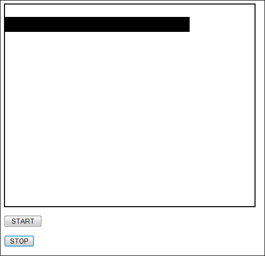

Javascript Timers and the HTML5 Canvas
Ongoing HTML5 Canvas Tutorial: 1 2 3 4 5 6 7 8 9 10 11 12 13 14 15
You can do simple animations with the canvas tag. There are, however, limitations that make coding busy animated scenes quite difficult with Javascript and the canvas tag. This is mainly because everything has to be cleared before you can draw a new scene. For example, suppose you wanted to move a black rectangle. You can't just move it to a new position. If you do, you'll have a black rectangle at the new position and one at the old position. You need to clear the entire canvas to erase the old one. (You can save the canvas state, however, and then restore it. But this is just used for static, non-moving parts of the scene.)
To see what all this means, create a new web page. Add the following as the HTML for the BODY section:
<BODY>
<SECTION style="border-style: solid; border-width: 2px; width: 500px;">
<CANVAS WIDTH="400" HEIGHT="400"
ID="canvas_1">
Canvas tag not supported
</CANVAS>
</SECTION>
<P><INPUT TYPE ="Button" VALUE=" START " onClick="drawOnCanvas()"></P>
<P><INPUT TYPE="Button" VALUE=" STOP " onclick="stopTimer()"></P>
</BODY>
It's the same as before but with a new button to stop a timer.
For your drawOnCanvas function, add the following:
function drawOnCanvas() {
var canvas = document.getElementById("canvas_1");
if ( canvas.getContext ) {
canvas_context = canvas.getContext("2d");
doTimer();
}
}
So we just want to call a doTimer function. Here it is:
function doTimer() {
x_pos = 0;
timerID = setInterval( "moveBox()", 200 );
}
We're setting up a variable called x_pos to begin with. We'll use this to move a black rectangle. Note that the variable doesn't start with var. This is because we want to make it a global function, meaning we need other functions to have access to it. If we set it up with var then x_pos would be local to the doTimer function.
For the setInterval timer we want to call a function with the name of moveBox. We want to call it every 200 milliseconds.
Here's the moveBox function to add to your code:
function moveBox() {
//canvas_context.clearRect( 0, 0, 400, 400 );
canvas_context.fillRect( x, 25, 50, 30 );
x = x + 10;
}
Notice the two comments before the call to clearRect:
//canvas_context.clearRect( 0, 0, 400, 400 );
You'll see why in a moment. To move the box, though, we have these two lines:
canvas_context.fillRect( x_pos, 25, 50, 30 );
x_pos = x_pos + 10;
The first number for fillRect is the X coordinate - how far from the left you want your rectangle. We're replacing this with our x_pos variable. We're then adding to 10 to x_pos each time the moveBox function is called by the setInterval timer.
The final part of the code to add is this:
function stopTimer() {
clearInterval( timerID );
}
This function stops the timer, and thus the animation.
Once you've finished typing the code, load the page into a browser and try it out. Click the START button. Click STOP after a few seconds. What you should see on your canvas is something like this:

The reason you get a black line stretching from left to right is because the canvas hasn't been cleared before each rectangle was drawn. So the previous one is still there.
Take the comments out from clearRect:
canvas_context.clearRect( 0, 0, 400, 400 );
Save the change and reload the page. Now click the START button again. This time you should see a black rectangle moving from left to right, rather than a solid line. If you have a HTML5 capable browser, you can try out the two scripts above by clicking these two links:
Example without clearing the rectangle
Example with clearing the rectangle
Another way to clear the canvas is by resetting the width property. Like this:
var cvs = document.getElementById("canvas_1");
cvs.width = cvs.width;
This code gets a reference to the canvas again, with getElementById. The width
is then rest. Resetting the width results in the canvas being erased.
In the next part, you'll learn how to move rectangles using the keyboard.